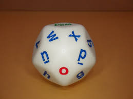
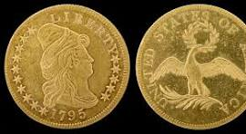
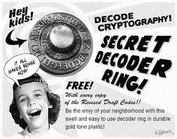
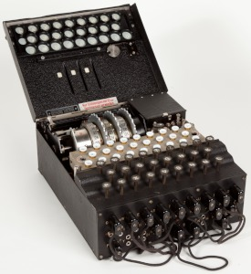
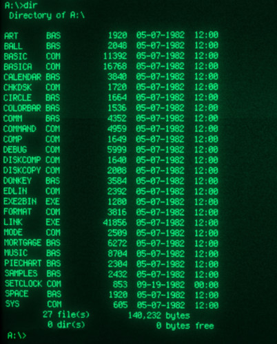
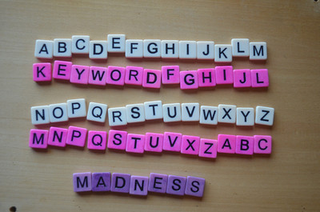
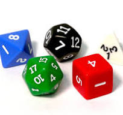
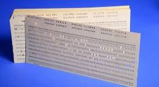
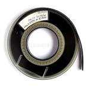
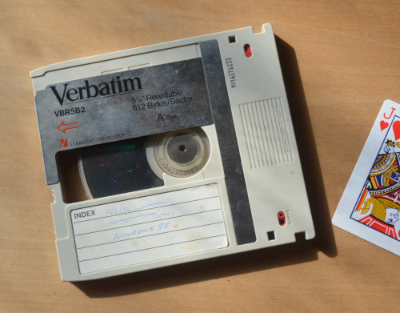

Madness, who has been with the cipher challenge for almost longer than Harry can remember, is the gift that keeps on giving (or, more properly, the giver that keeps on gifting). We hope you have already discovered the fantastic introduction to codebreaking based in part on the competition and stored neatly on the shelves of our web library for all to share.
Madness has given considerable thought to what a successful BOSS operative might need in the field, and put together the following guide. You may already have some of these things, and you certainly don’t need all of them to succeed in breaking the codes and ciphers presented here, but they might give you ideas for tools that could be helpful. They can all be simulated one way or another on your computer or phone, so don’t rush out to buy anything! Anyway, we thought you might enjoy!
|  | One 26-sided alphabet die (d26). Good for generating one-time pads. Color and alphabet may vary. |
|  | One flipping coin. Good for making those tough decisions. Country of origin and denomination may vary. |
|  | Secret decoder ring. Need we say more. Except, it is probably not much of a secret now we have posted it here. |
 | A stack of floppy discs to store your working files. (Ah, happy days. Or not so happy. My only two digital copies of my thesis were stored on discs like this and they both got wiped by airport security. Luckily I had a printed copy. H) |
|  | Getting hardcore now. You are not likely to have access to one of these, but you can look up how to make your own Pringle can Enigma machine on our cipher tools page. |
|  | Even older than a floppy disc, but they give a soothing glow if you are tuned to that sort of thing. |
|  | Back to basics with two sets of letter tiles, for working your keyword ciphers. Colors may vary. |
| One magnet. Only available in red. (Like the one I think the security guards must have used on my luggage! Or was that the X-Ray machine? H.) | |
|  | Set of platonic dice. Includes tetrahedron (4d), hexahedron (d6), octahedron (d8), dodecahedron (d12), and twentihedron [icosahedron, shurely, Ed.) (d20). The sixth one is missing for some reason [Ho ho, very funny, H!] Good for random-number generation and infiltrating gaming societies. Size and color may vary. |
|  | Stack of computer punch cards. Useful for writing your FORTRAN programs. [I like these. They don’t get wiped by magnets OR X-Ray machines! H] |
|  | One high-capacity computer tape. Good for storing your secrets. Keep away from magnets. |
|  | [Now we are getting really high tech. If I am not mistaken this tiny(!!!!!!) drive is a re-writable optical disk, and each one could store 600MB. Or the equivalent of about 200 of the cheapest iPhones! |
 | Finally, and most importantly, one standard-issue B.O.S.S. deck of playing cards. This is the same deck that Harry gave me two years ago. Notice that the 52 cards are arranged in order in four sets of 13 or two sets of 26, much like two copies of a 26-letter alphabet. Also notice that there are added two different jokers. I like to call them “Joker A” and “Joker B”. Available with red or blue backing. This item is important. Remember it. Deck. Cards. |